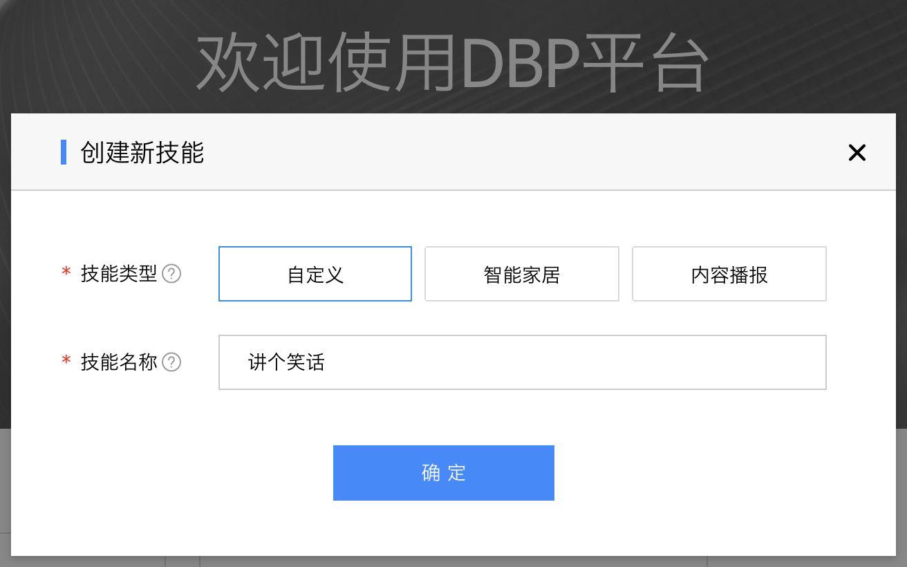
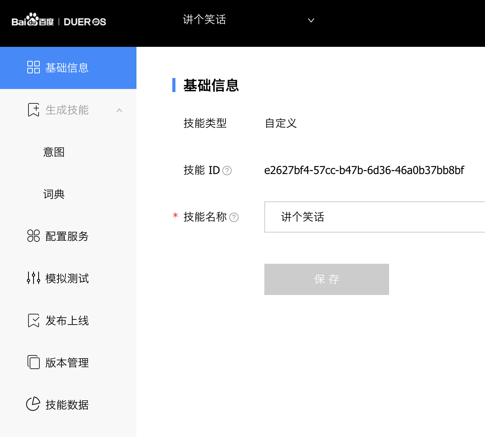
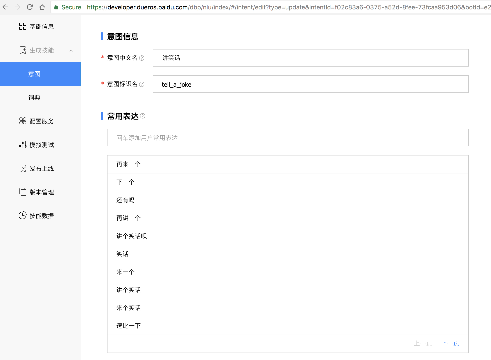
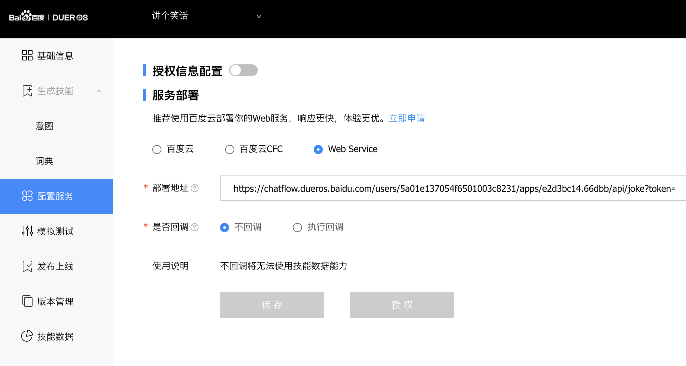
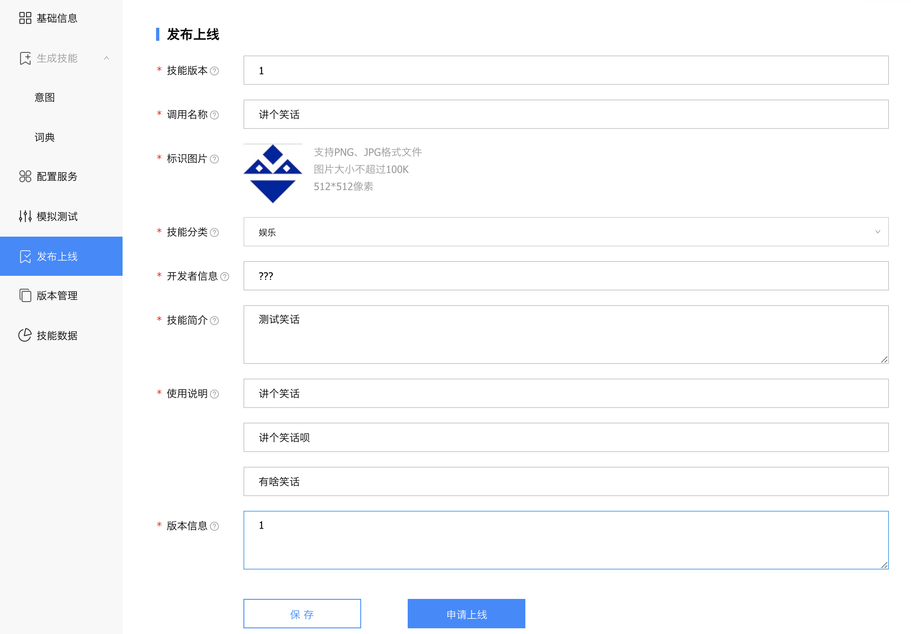
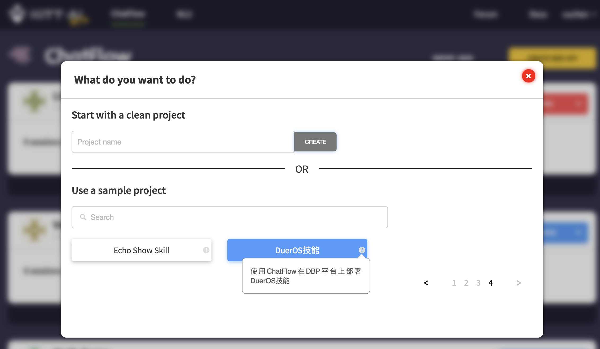
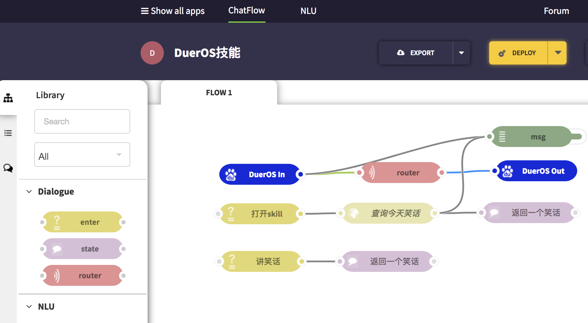
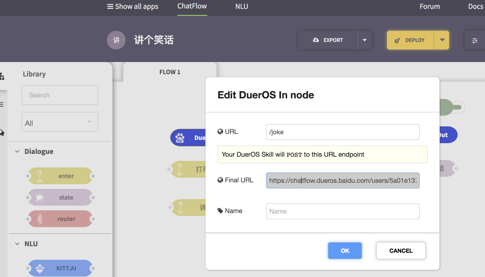
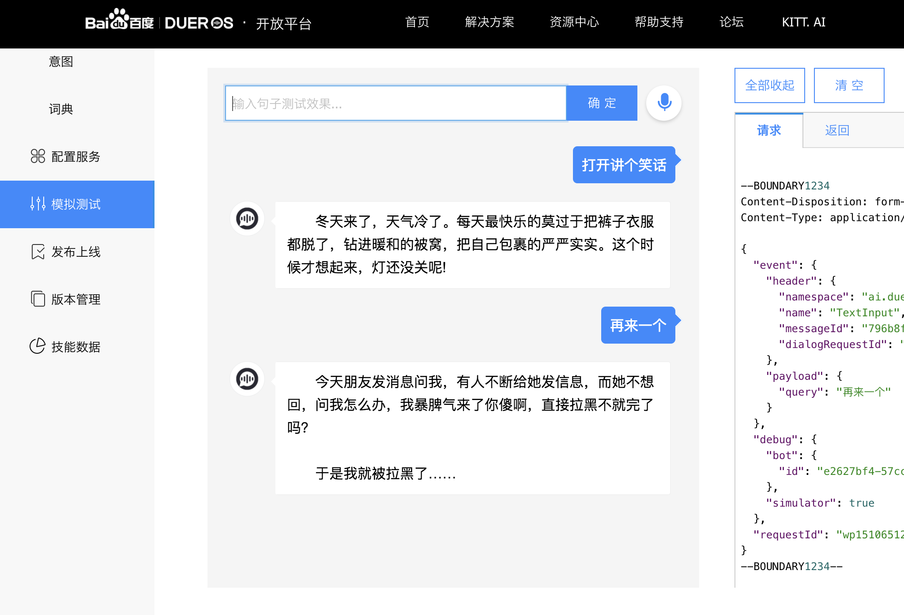
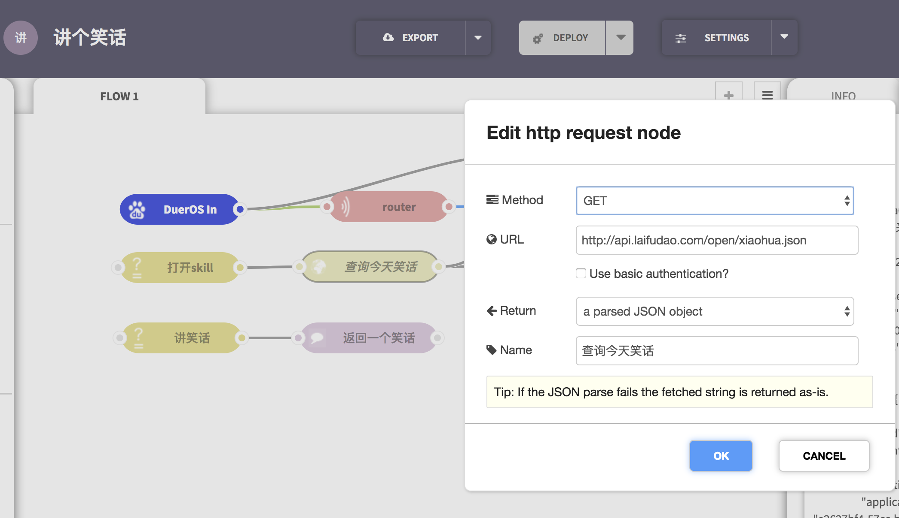

使用ChatFlow部署小度技能¶
Table of Contents
介绍¶
ChatFlow 可以作为小度DuerOS Bot Platform (DBP)的一个在线SDK，供开发者制作高级技能。使用DBP自身也可以发布技能，开发者无需编程。 但是当有开发者需要对技能有更高要求时，可以使用 ChatFlow 快速编辑并部署。
ChatFlow 快速提供webhook回调地址给DBP，这样复杂逻辑和需要编程的工作可以从 ChatFlow 端实现。
本小节简单介绍如何使用ChatFlow部署一个非常简单的讲笑话的技能，并且说明ChatFlow中如何保存上下文。
Note
为保证在中国的服务速度，我们在百度云上搭建了ChatFlow的服务器：https://ChatFlow.dueros.baidu.com/。其他bot服务 可以继续使用 https://ChatFlow.kitt.ai
配置DBP技能¶
首先以开发者身份登录 DBP 创建一个”自定义”技能：
在”基础信息”栏填入技能名称：
配置一个简单的”讲笑话”/”tell_a_joke”意图，并且输入一些例句：
注意我们这个技能并不包含多轮对话。我们用了一个非常简单的单意图对话。
在”配置服务”一栏我们需要填入部署地址，稍等片刻，我们在下一节提供：
最后在”发布上线”中填入所有必须项，点击”保存”：
建立ChatFlow技能¶
登陆 ChatFlow 后，点击”CREATE NEW APP”，在”Use a sample project”中选取”DuerOS技能”：
建立技能后可以看到一个简单的bot和操作界面：
双击DuerOS In节点，即可看到在”Final URL”栏里的服务器地址：
DuerOS的服务请求都可以发到这个地址来。复制这个地址，回到 DBP 粘贴 到”配置服务”一栏：
回到ChatFlow，点击”DEPLOY”，这个笑话技能就部署完毕了。我们可以在DBP的”模拟测试”中测试一下：
ChatFlow技能详解¶
在上面的例子里我们通过ChatFlow提供DuerOS技能的接入。当用户对小度说话时，信息会通过DuerOS In节点传到ChatFlow来。 router节点是对话管理器，负责更负责的对话逻辑。DuerOS Out节点会负责讲信息返回给DBP的发送者。
我们使用了一个HTTP节点和免费的API，用来获取当天的最新笑话：http://api.laifudao.com/open/xiaohua.json
解析出来的JSON结构会存在 msg.payload 中，通过连线传到后面的节点。在”返回一个笑话”节点中，有一段简单的代码用来获取笑话：
msg.kitt.jokes = msg.payload;
msg.kitt.total = msg.kitt.jokes.length;
msg.kitt.current = 0;
msg.kitt._responses = [msg.kitt.jokes[msg.kitt.current]["content"]];
msg.kitt.current += 1;
return msg;
在这里 msg.kitt.* 会在每一轮对话中保持住，所以当用户说”再讲一个”时，技能会抛出一个新笑话，而非重复上一个。
当用户说”打开讲个笑话”时，msg.kitt._skill_launched 会被赋值为 true。我们的”打开skill”节点就会匹配：
这时技能可以说一些介绍的话，而我们直接调用了笑话的web API初始化当天的笑话集，并返回一个笑话。
当用户说”再来一个”时， msg.dueros.request.intents 会包含一个所有可能的意图列表。为了简单起见，我们把最有可能的意图放到
msg.NLU.intent 中：
当我们检测到”tell_a_joke”意图时，就可以匹配此节点，然后再次返回一个新笑话。
DuerOS In/Out格式¶
当用户输入”打开讲个笑话”时，DBP会触发这个技能。DuerOS In节点就会输出：
msg:{
"_msgid": "a842b41b.1d3208",
"payload": null,
"dueros": {
"version": "v2.0",
"session": {
"new": true,
"sessionId": "43d4279f-b46a-4783-b372-768e6be78ce7"
},
"context": {
"System": {
"user": {
"userId": "46583872",
"userInfo": {}
},
"application": {
"applicationId": "e2627bf4-57cc-b47b-6d36-46a0b37bb8bf"
},
"device": {
"deviceId": "446d1feca5592c74c793ee481f085096"
}
}
},
"request": {
"type": "LaunchRequest",
"requestId": "e1936c47aeb2497494ef53f1d5172a3d_1",
"timestamp": "1510752979"
}
},
"kitt": {
"_session_started": true,
"_session_ended": false,
"_skill_launched": true,
"_session_id": "43d4279f-b46a-4783-b372-768e6be78ce7",
"_user_id": null,
"_timeout": 30
},
"NLU": {
"intent": null,
"entities": {}
}
}
注意 msg.kitt_session_started 的值为 true ，表明用户对技能新发起了一个对话。
当用户输入”再来一个”时，DuerOS In输出：
msg: {
"_msgid": "57e1cbf2.108024",
"payload": "再来一个",
"dueros": {
"version": "v2.0",
"session": {
"new": false,
"sessionId": "43d4279f-b46a-4783-b372-768e6be78ce7",
"attributes": {}
},
"context": {
"System": {
"user": {
"userId": "46583872",
"userInfo": {}
},
"application": {
"applicationId": "e2627bf4-57cc-b47b-6d36-46a0b37bb8bf"
},
"device": {
"deviceId": "446d1feca5592c74c793ee481f085096"
}
}
},
"request": {
"query": {
"type": "TEXT",
"original": "再来一个"
},
"dialogState": "COMPLETED",
"intents": [
{
"name": "tell_a_joke",
"confirmationStatus": "NONE",
"slots": {}
}
],
"type": "IntentRequest",
"requestId": "faf421b71d914cd8b0529f4f37178229_1",
"timestamp": "1510752988"
}
},
"kitt": {
"_session_started": false,
"_session_ended": false,
"_skill_launched": false,
"_session_id": "43d4279f-b46a-4783-b372-768e6be78ce7",
"_user_id": null,
"_timeout": 30
},
"NLU": {
"intent": "tell_a_joke",
"entities": {},
"sentence": "再来一个",
"intents": "[circular]"
}
}
此时 msg.dueros.request.intents 是一个只有一个元素的列表， msg.NLU.intent 把它提取了出来方便以后访问。而
msg.kitt._session_started 变成了 false 表明对话正在进行中。
用户返回给DuerOS Out的格式也非常简单：只要把 msg.kitt._responses 列表赋值即可。如果 msg.kitt._responses
列表有多于一个选项，则DuerOS Out会随机选一个输出。如果需要更加详细地控制输出，则可以设置如下选项：
msg.dueros.outputSpeechmsg.dueros.repromptmsg.dueros.cardmsg.dueros.directives
有关更多DBP的使用说明，可以查看 这里 。